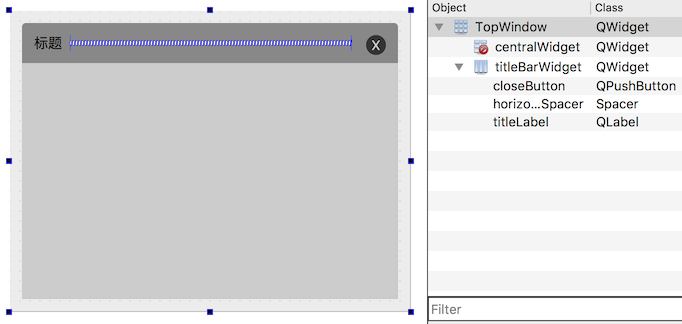
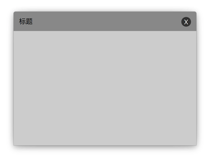

Qt 的默认窗口使用系统风格，不能修改标题栏和边框，满足不了高度自定义的窗口设计，这时只能把窗口的默认标题栏和边框隐藏起来，替换上我们自定义的标题栏和边框，下面就以实现自定义标题栏无边框阴影窗口为例进行介绍。
技术要点:
- 隐藏系统标题栏和边框:
QWidget::setWindowFlags(Qt::FramelessWindowHint) - 窗口透明隐藏默认背景:
QWidget::setAttribute(Qt::WA_TranslucentBackground) QWidget::paintEvent(QPaintEvent *event)里绘制任意形状的自定义背景- 拖拽移动窗口
- 缩放窗口
自定义窗口
创建自定义窗口类 TopWindow，在 TopWindow.ui 中使用 GridLayout 布局并设置 QSS:

1 | #centralWidget { |
再准备一张带阴影的背景图，使用九宫格绘图技术绘制到 TopWindow 上:
1 | TopWindow::TopWindow() : ui(new Ui::TopWindow) { |
得到自定义标题栏、带阴影的窗口效果如下:

拖拽移动窗口
保存移动窗口前窗口左上角的坐标 windowPositionBeforeMoving 和按下鼠标时鼠标的全局坐标 mousePressedPosition，重写函数 mousePressEvent、mouseReleaseEvent、mouseMoveEvent 就可以实现按住鼠标拖拽移动窗口，在按下鼠标拖动窗口一节中介绍了详细实现，在这里就不重复赘述了。
缩放窗口
缩放窗口其实才是最困难的，如果想使用系统的原生方案，也是最好的方案，需要针对不同的系统重写事件处理函数 nativeEvent，这里我们偷了个懒没有这么做，而是在窗口的右下角放置了一个 QSizeGrip 实现窗口的缩放，在 TopWindow 的构造函数中增加下面的代码:
1 | QSizeGrip *sizeGrip = new QSizeGrip(this); |
提示:
利用了 QGridLayout 的同一个位置可以放置多个 QWidget 的特点把 QSizeGrip 和 centralWidget 放在同一个位置(row 和 column 分别相等)，只是 QSizeGrip 在右下角，centralWidget 填充满中间。
为了方便演示，QSizeGrip 做成了个红色的小方块，怎么使用 QSS 设置它的背景图使它变得更好看，大家各自尽情发挥好了。
思考
每当要使用一个自定义窗口都要重复嵌入上面这些代码，自定义窗口一多，明显的效率就很低了。可以把 TopWindow 作为一个工具类，标题、标题栏、中心的 widget、边框阴影的背景图等都可以通过构造函数的参数传入或者提供设置函数。
例如中心部分的 centralWidget 我们可以通过构造函数传入进来，替换掉 ui->centralWidget 就可以了，提供设置标题的函数:
1 | TopWindow::TopWindow(QWidget *centralWidget) : ui(new Ui::TopWindow) { |
使用则如下:
1 | int main(int argc, char *argv[]) { |
这样是不是需要使用自定义窗口的时候只需要关心组件的布局，自定义窗口部分直接使用 TopWindow 就可以了？也即是说，自定义窗口的代码不会污染我们业务逻辑窗口相关的代码，启用和关闭自定义窗口功能只需要很少的几行代码就可以做到。
上面的实现没有提供最小化按钮、最大化按钮、最大化时不能移动和缩放窗口、替换整个标题栏等，理解了上面的代码，这些都不是大问题了，就留给大家思考一下怎么实现，最后提供一个实现了这些功能的代码以供参考 TopWindow.7z。
另外，再思考个小问题，要实现任意形状的窗口，应该怎么做呢？至此如果这个都还不会做的话，转行应该是个不错的选择！